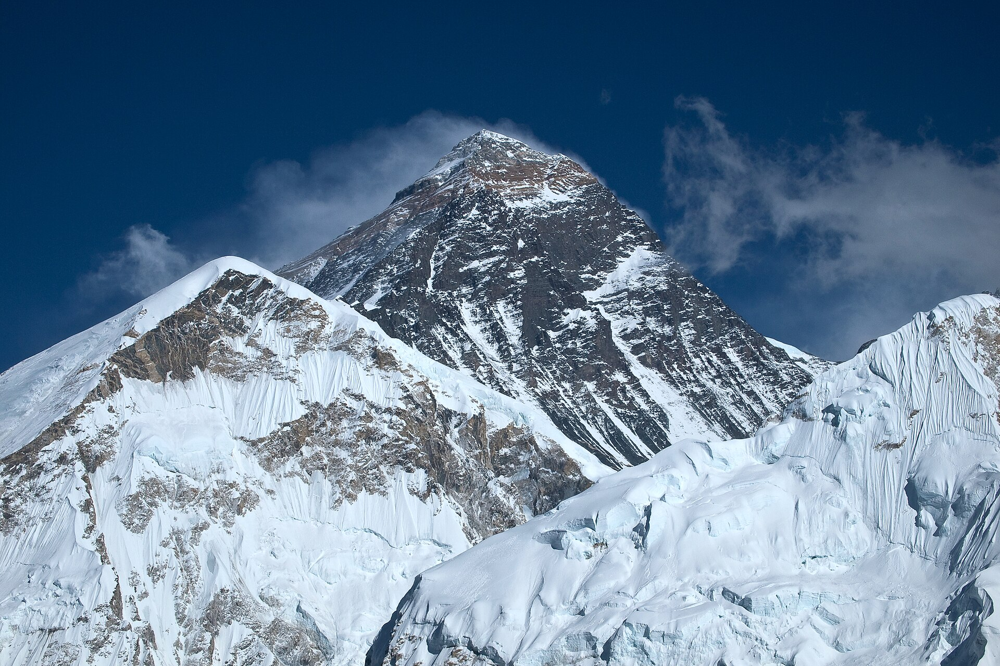

Kathmandu and Pokhara with a Protected Himalaya Transfer — 7-day family itinerary
A two-base Nepal route for families who want heritage, mountain scenery and recovery time without pretending the Kathmandu–Pokhara transfer is a quick hop.

Checked before you commit
This is a planning model, not a live booking or verification result. It protects the long Kathmandu–Pokhara move, keeps one main anchor per day, and leaves weather and energy decisions visible.
Kathmandu for three nights, one protected transfer day, then Pokhara for three nights.
Moderate pace, recovery windows and named indoor or local fallbacks.
Recheck roads, weather, tickets, access, prices and supplier terms before booking.
Planning boundary: dates are illustrative. Opening a booking hub indicates intent only; it does not prove a reservation.
Two bases, one transfer worth protecting
Stay in Kathmandu for three nights to absorb the valley’s heritage clusters, make Kathmandu–Pokhara its own day, then use Pokhara as a slower lake-and-mountain base. The geography is coherent, but current road conditions, weather, altitude considerations, access and provider terms still require live confirmation.
Seven-day route
Day 1 — Kathmandu soft landing around Patan
After arrival, settle near Patan and use the afternoon for Patan Durbar Square and a short surrounding-lane walk. Keep it to one local anchor after a long flight. Fallback: hotel recovery and one nearby meal if luggage, traffic or energy runs late; check access and hours before committing.
Day 2 — Swayambhunath into Kathmandu’s core
Start around 09:00 at Swayambhunath, then continue to Kathmandu Durbar Square and lunch before the afternoon heat or fatigue builds. Fallback: keep Kathmandu Durbar Square as the anchor if steps, crowds or weather make the first stop unsuitable; confirm tickets and access live.
Day 3 — Boudhanath and Pashupatinath cluster
Use a 09:00–13:00 eastern-valley sequence: Boudhanath Stupa, a slower lunch nearby, then Pashupatinath only if energy allows. Leave late afternoon for packing and an early night. Fallback: choose Boudhanath alone and protect the evening; do not fill the gap with a distant cross-city stop.
Day 4 — Protect the Kathmandu–Pokhara transfer
Depart early with water, snacks and a generous arrival buffer; treat the road leg as the day’s main event rather than promising a fixed duration. Check route, weather, road status and driver/vehicle terms before departure. Fallback: keep the Pokhara sequence editable if conditions or fatigue change the plan; do not assume recovery without a live check.
Day 5 — Phewa Lake and the World Peace Pagoda decision
Start with Phewa Lake, then choose World Peace Pagoda only if weather, access and energy support it; keep the afternoon near Lakeside. Fallback: if cloud or rain interrupts the pagoda plan, use Phewa shore time and the International Mountain Museum, subject to current hours and tickets.
Day 6 — Sarangkot only if the forecast earns it
Make Sarangkot a forecast-led option: check conditions, transport and sleep tolerance before an early departure, then return for breakfast and a slower Pokhara afternoon. Fallback: skip the start and use the Mountain Museum plus a short lakeside loop; no mountain visibility is implied.
Day 7 — Pokhara buffer and departure
Keep the final morning short: breakfast near Lakeside, one nearby walk or shopping stop, then a protected departure buffer. Fallback: absorb a timing change here rather than scheduling a distant attraction; confirm baggage, transfer, airport/road conditions and cancellation terms.
Planning notes
Build the route with the travelling profile, dates, budget and pace that matter to your party. Recheck visa and entry rules, current roads, weather, altitude considerations, transport, tickets, opening hours, accessibility, baggage, prices, cancellation terms and supplier availability at decision time. Alfred can help generate, edit and share a structured itinerary; it does not guarantee live verification or a booking.
Build the full plan in Alfred
Generate, validate and edit the complete itinerary in the Alfred app.